| SOURCE | TITLE| IMAGE MATCH | click to source page |
| HipStamp | China Stamp-1956 Sc#290-4 Famous Views & Beauty of Forbidden City CTO Set-Vf | Asia - China, General Issue Stamp / HipStamp | 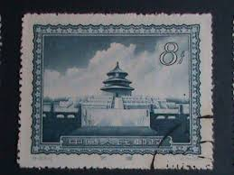 |
| eBay | PRC. 293. S15-4. 8f. Temple of Heaven, Views of Peking. CTO. NH. 1956 | eBay | 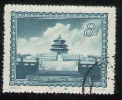 |
| Find Your Stamps Value | Value of china views of peking, 1956 stamps | 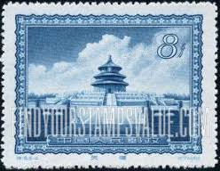 |
| eBay UK | PRC. 293. S15-4. 8f. Temple of Heaven, Views of Peking. CTO. NH. 1956 | eBay UK | 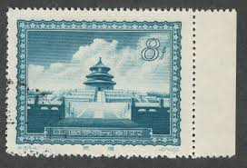 |
| Alamy | Historical cityscape stamp hi-res stock photography and images - Alamy | 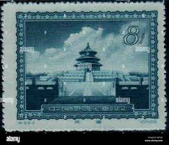 |
| 福ちゃん | 幻のプレミア切手「天安門光芒放射」も！中国切手「北京の名勝」の全種解説と市場価値｜切手買取【買取福ちゃん】 FUKUCHAN | 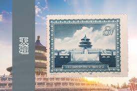 |
| 什么值得买 | 邮票收藏新手指南：从入门到精通的收藏之旅_收藏邮币_什么值得买 | 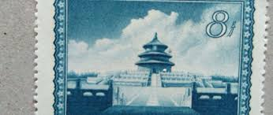 |
| eBay | Postal History Taiwan Stamps for sale | eBay | 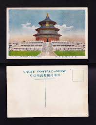 |
| macklawgrp.com | 中国特殊切手 特15天安門大和殿他 亜東書店5枚セット耳付 | 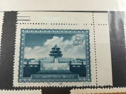 |
| eBay | PRC. 293. S15-4. 8f. Temple of Heaven, Views of Peking. CTO w/Margin. NH. 1956 | eBay | 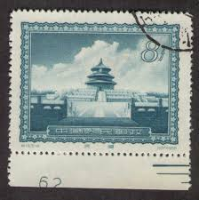 |
| Archel - Rp 32.000 | Facebook | 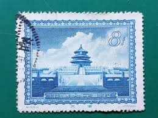 | |
| eBay | People's Republic of China Scott #293 Used | eBay | 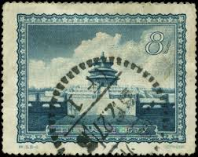 |
| brstamp.com | 特15 首都名胜1956.6.15. – 左氏珍藏 | 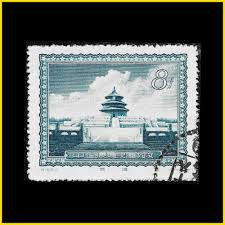 |
| Paper Money Guaranty | PMG | Collection of Old Currency Found in Desk - Newbie Note Collecting Questions - PMG Note Collectors Chat Boards | 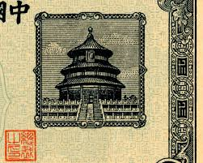 |
| Join macsu and explore maximaphily opportunities | 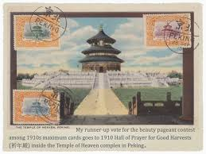 | |
| 知乎 | 特15名胜（首都名胜）邮票- 知乎 | 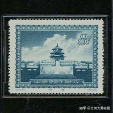 |
| eBay | 👍 1900s CHINA IMPERIAL QING PEKING TEMPLE OF HEAVEN POSTCARD | eBay | 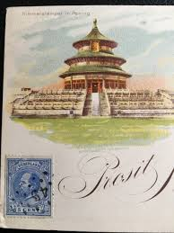 |
| PICRYL | 5 Yuan - Sino-Scandinavian Bank, Peking Branch (01.02.1922) 01 - PICRYL - Public Domain Media Search Engine Public Domain Search | 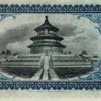 |
| eBay | China Provincial Bank of Manchuria 1922, 10 Dollars, S2938,PMG 35 VF | eBay | 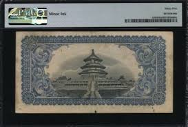 |
| China Whisper | Top 10 rare and valuable China stamps | ChinaWhisper | 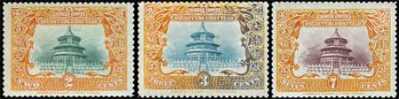 |
| postbeeld.com | Stamps from Micronesia - PostBeeld - Online Stamp Shop - Collecting | 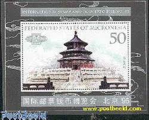 |
| Henry Gitner | US 232 Trust Territories Micronesia NH VF Beijing '95 S/S – Hgitner.com | 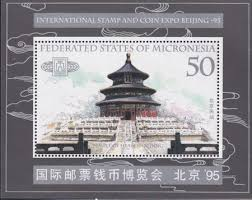 |
| eBay | Orange Individual Asian Stamps for sale | eBay | 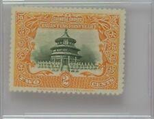 |
| eBay | 1909 Temple of Heaven Issue #96,97,98, China Stamps Mint [111421a] | eBay | 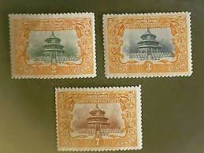 |
| Free stamp catalogue | Stamps from China (before 1949) - Freestampcatalogue.com - The free online stampcatalogue with over 500.000 stamps listed. | 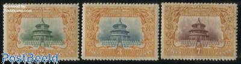 |
| Müzayede APP | 1995 Micronezya; Uluslararası Pul ve Madeni Para Sergisi Pekin '95, Pekin; Cennet Tapınağı, Pekin | Müzayede APP | 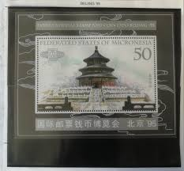 |
| eBay | Cover PRC China to Deutsche Dem.Rep. DDR 1956 . 9 stamps Used Via Airmail. | eBay | 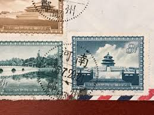 |
| eBay | W MICRONESIA 0232 CHINA INTERNATIONAL STAMP EXHIBITION | eBay | 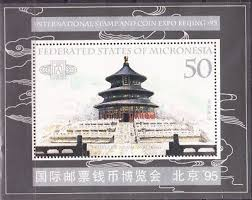 |
| eBay | China 1909 Imperial Post Temple Of Heaven in Set Of Three Mint #CN608 | eBay | 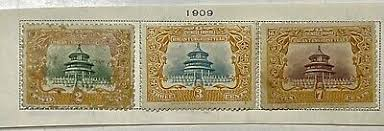 |
| eBay | LIECHTENSTEIN 2008 TWO FIRST DAY COVERS ON MAXI CARD, CHINA SUMMER OLYMPICS | eBay | 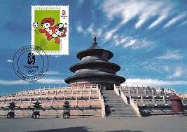 |
| Etsy | Vintage Antique Real Photo Postcard Happy New Year Hall in the Temple of Heaven Unused - Etsy | 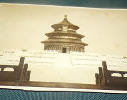 |
| Aukro | STARÁ POHLEDNICE ASIE | Aukro | 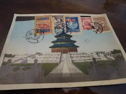 |
| HipStamp | China-1909 Sc#131-3 Temple of Heaven-Beijing Mint-113 Years Old-Very Fine | Asia - China, General Issue Stamp / HipStamp | 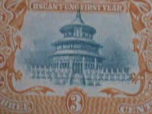 |
| eBay | 1996 32 cent Chinese New Year full Sheet of 20 Scott #3060, Mint NH | eBay | 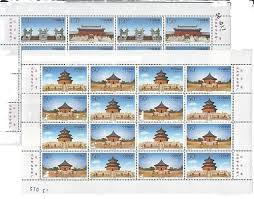 |
| piddix | PDXC9565 -- Travel Postcards - piddix | 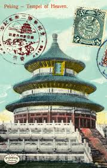 |
| eBay | MICRONESIA #232 1995 INT'L STAMP & COIN EXIB. MINT VF NH S/S aa | eBay | 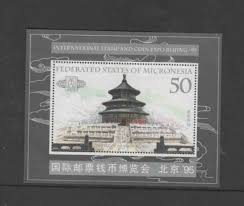 |
| Period Paper Historic Art LLC | 1906 Print Temple Heaven Beijing China Emperor Taoist Architecture Tem – Period Paper Historic Art LLC | 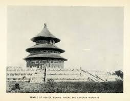 |
| eBay | LIECHTENSTEIN, 2x 1st-day card 2008, Olympic Games Peking | eBay | 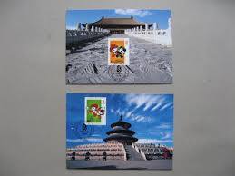 |
| China stamp | R11 Scott 574-585 Regular Issue with Designs of Revolutionary Monuments (1st) - China Stamps | 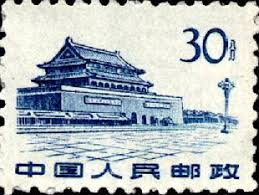 |
| eBay | Bank of CHINA 1979 50 Fen Foreign Exchange Certificate-FX0002-Unc.-Temple Heaven | eBay | 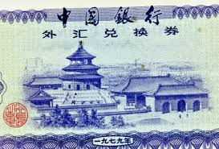 |
| 中華郵政全球資訊網 | The Postal Universal Website of R.O.C ─ Stamp House - Pages | 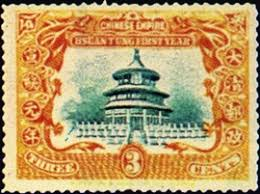 |
| BaridX | BaridX | 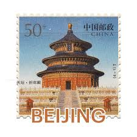 |
| eBay | China Postcard - China'96 - 9th Asian International Philatelic Exhibition (#1) | eBay | 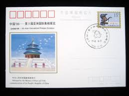 |
| eBay | China 1984 FDC Barcelona Spain Stamp Exhibit Chinese Temple Rose Postmark Rare C | eBay | 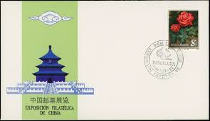 |
| eBay | 1949 Year World Paper Money for sale | eBay | 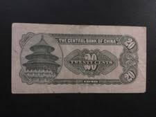 |
| PicClick UK | CHINA 1931 OLD Real Photo Card Native Chinese House, Large Urns by Entrance Door £5.99 - PicClick UK | 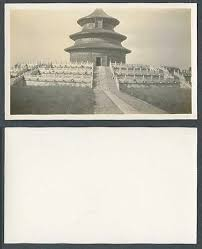 |
| RealBanknotes.com | RealBanknotes.com > China p74a: 1 Yuan from 1935 | 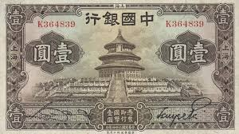 |
| Blogger.com | BIOGRAPHY: Lorenzo J. Hatch | 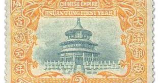 |
| eBay | 1940 Year Banknote Chinese Paper Money for sale | eBay | 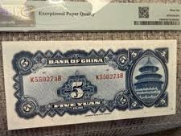 |
| 中華郵政全球資訊網 | The Postal Universal Website of R.O.C ─ Stamp House - Pages | 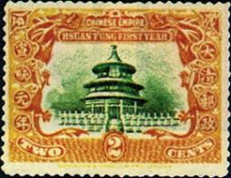 |
| eBay | Original Photograph 1910s China Peking Temple of Heaven Hand Colored Photo | eBay | |
| Smithsonian | 10 Cents, Bank of China, Shanghai, China, 1918 | National Museum of American History | |
| eBay | CHINA, BEIJING - TEMPLE OF HEAVEN & ORIGINAL ca 1920's SNAPSHOT PHOTO | eBay | |
| Tripadvisor | Palais des Nations (Geneva, Switzerland): Hours, Address, Attraction Reviews - Tripadvisor | |
| HipStamp | China-1909 Sc#131-3 Temple of Heaven-Beijing Used-Complete SET 113 Years OLD | Asia - China, General Issue Stamp / HipStamp | |
| Shutterstock | 23+ Thousand China Pay Royalty-Free Images, Stock Photos & Pictures | Shutterstock | |
| eBay | China Stamp 2001 The Accession of China to the WTO MNH | eBay | |
| eBay | 1957 book on China religion, politics from a Chinese Malayan view 中國印象 葉世芙 蜜蜂出版社 | eBay | |
| PicClick | CHINA - SC 121 - LOOK! $48.95 - PicClick |